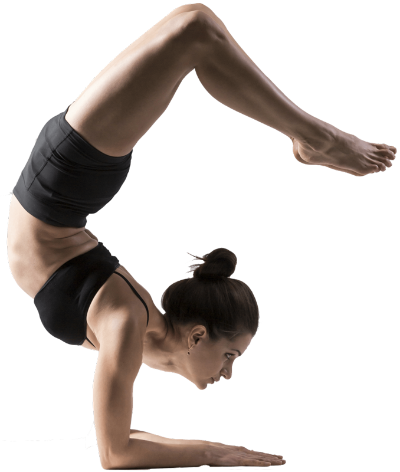

Yoga
Lo yoga è un percorso spirituale che si può intraprendere per le più svariate ragioni: alcuni si avvicinano a questa disciplina per riscoprire la respirazione, altri a seguito di un infortunio, altri ancora per la valenza meditativa, per migliorare il sonno o, come può accadere, anche per caso.
Obiettivi
Normalmente si inizia con un obiettivo consono al proprio stato fisico o mentale: migliorare lo stato di salute generale del corpo o curare piccoli disturbi fisici (ad es. mal di schiena o cattiva digestione). Oppure calmare la mente irrequieta e ansiosa. Ecco i dieci motivi per cui decidersi a provare a intraprendere il percorso per praticare yoga:
- Diminuisce i valori dell’ansia e dello stress
- Riduce la depressione
- Calma la mente riducendo l’emozione negativa
- Riallinea i bioritmi
- Risolve l’emotività rispetto a piccoli traumi
- Aiuta a superare meglio il dolore
- Migliora la percezione di sé aumentando l’autostima
- Aiuta a migliorare il sistema immunitario ed endocrino
- Stimola l’attività cognitiva
- Migliora la memoria a breve e lungo termine